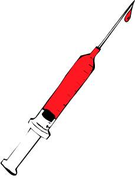

VIDEO
Contact 2021.06.04 18:55

Informasi Seputar Kesehatan | Halodoc Hello Sehat | Pusat Informasi Kesehatan Terverifikasi Medis Kementerian Kesehatan Republik Indonesia Berita Terkini tips kesehatan Terbaru Hari Ini - SINDOnews Berita Kesehatan seputar Produk dan Layanan kesehatan . Kesehatan - Wikipedia bahasa Indonesia, ensiklopedia bebas Informasi dan Artikel Seputar Kesehatan - Halodoc Dinas Kesehatan Kota Batam - Jl. Raja Haji No. 7 Sekupang . detikHealth | Berita Artikel Kesehatan, Diet, Seks, dan Konsultas Berita Kesehatan Terkini - Kompas.com